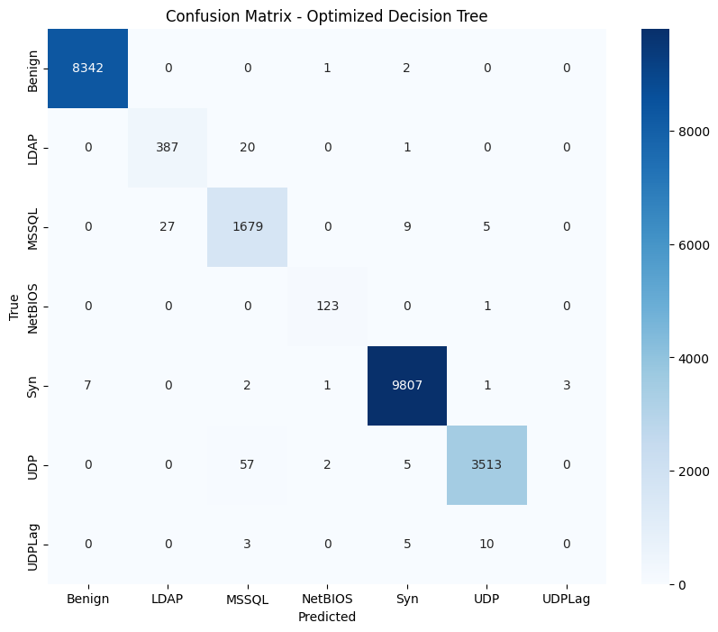
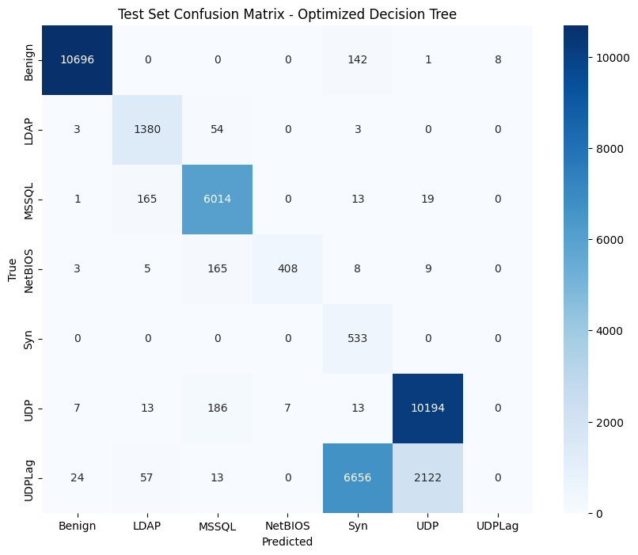
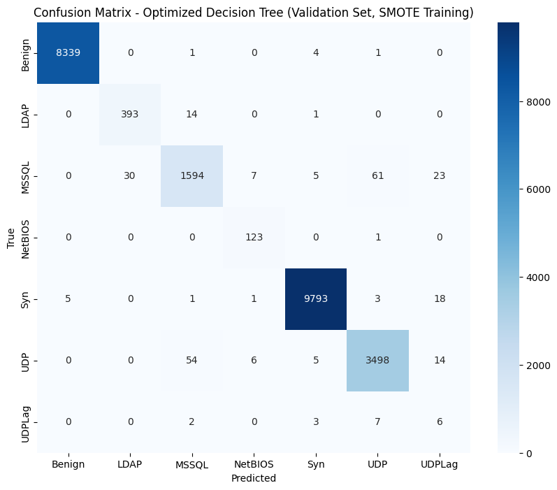
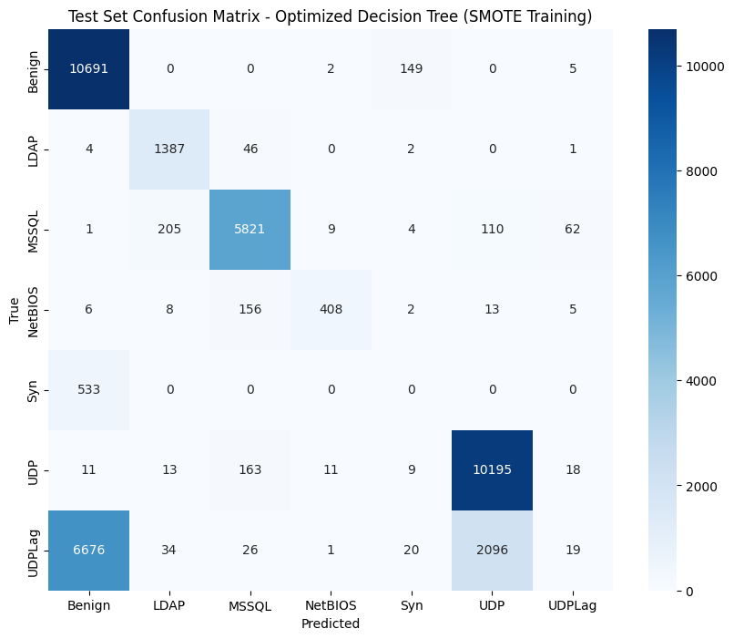

#1- Project Background
This notebook is part of the practical coursework in the KDD Course Lab at the Arab International University (AIU).
This work extends the analysis from the notebook "DDoS Detection using Machine Learning" by RAKIB HOSSAIN SAJIB. This notebook focuses on exploring different encoders and scalers with the KNN model, performing detailed evaluation and tuning, and also training and optimizing a Decision Tree model, including the application of SMOTE to address class imbalance.
The dataset used in this notebook is CIC-DDoS2019, an academic intrusion detection dataset available on Kaggle.
pd.read_parquet (requires pyarrow or
fastparquet).The dataset consists of 17 parquet files:
In this section, we will train a Decision Tree model on the preprocessed data and then fine-tune its hyperparameters using GridSearchCV to find the optimal configuration.
from sklearn.tree import DecisionTreeClassifier
# Initialize a Decision Tree model
dt_model = DecisionTreeClassifier(random_state=42)
# Train the model on the training data (using the best scaler and encoder from previous steps)
# Assuming X_train_scaled and y_train_encoded are available from the previous best model
dt_model.fit(X_train_scaled, y_train_encoded)
# Evaluate the initial model on the validation set
y_val_pred_dt_initial = dt_model.predict(X_val_scaled)
# Calculate metrics
accuracy_dt_initial = accuracy_score(y_val_encoded, y_val_pred_dt_initial)
precision_dt_initial = precision_score(y_val_encoded, y_val_pred_dt_initial, average='weighted', zero_division=0)
recall_dt_initial = recall_score(y_val_encoded, y_val_pred_dt_initial, average='weighted', zero_division=0)
f1_dt_initial = f1_score(y_val_encoded, y_val_pred_dt_initial, average='weighted', zero_division=0)
print("Initial Decision Tree Model Performance on Validation Set:")
print(f"Accuracy: {accuracy_dt_initial:.4f}")
print(f"Precision: {precision_dt_initial:.4f}")
print(f"Recall: {recall_dt_initial:.4f}")
print(f"F1 Score: {f1_dt_initial:.4f}")# Define parameter grid for Decision Tree
param_grid_dt = {
'max_depth': [None, 10, 20, 30, 40, 50],
'min_samples_split': [2, 5, 10],
'min_samples_leaf': [1, 2, 4],
'criterion': ['gini', 'entropy']
}
# Create GridSearchCV for Decision Tree
grid_search_dt = GridSearchCV(
DecisionTreeClassifier(random_state=42),
param_grid_dt,
cv=5,
scoring='f1_weighted',
n_jobs=-1
)
# Fit GridSearchCV
grid_search_dt.fit(X_train_scaled, y_train_encoded)
# Get best parameters and best score
print("Best parameters for Decision Tree:", grid_search_dt.best_params_)
print("Best cross-validation F1 score for Decision Tree:", grid_search_dt.best_score_)Best parameters for Decision Tree: {'criterion': 'entropy', 'max_depth': 10, 'min_samples_leaf': 1, 'min_samples_split': 5}
Best cross-validation F1 score for Decision Tree: 0.9923019469505251
# Train final Decision Tree model with best parameters
best_dt_model = grid_search_dt.best_estimator_
best_dt_model.fit(X_train_scaled, y_train_encoded)
# Evaluate on validation set
y_val_pred_dt_optimized = best_dt_model.predict(X_val_scaled)
# Calculate metrics
accuracy_dt_optimized = accuracy_score(y_val_encoded, y_val_pred_dt_optimized)
precision_dt_optimized = precision_score(y_val_encoded, y_val_pred_dt_optimized, average='weighted', zero_division=0)
recall_dt_optimized = recall_score(y_val_encoded, y_val_pred_dt_optimized, average='weighted', zero_division=0)
f1_dt_optimized = f1_score(y_val_encoded, y_val_pred_dt_optimized, average='weighted', zero_division=0)
print("Optimized Decision Tree Model Performance on Validation Set:")
print(f"Accuracy: {accuracy_dt_optimized:.4f}")
print(f"Precision: {precision_dt_optimized:.4f}")
print(f"Recall: {recall_dt_optimized:.4f}")
print(f"F1 Score: {f1_dt_optimized:.4f}")
# Create confusion matrix for the optimized Decision Tree model
cm_dt_optimized = confusion_matrix(y_val_encoded, y_val_pred_dt_optimized)
plt.figure(figsize=(10, 8))
sns.heatmap(cm_dt_optimized, annot=True, fmt='d', cmap='Blues',
xticklabels=classes, yticklabels=classes)
plt.title("Confusion Matrix - Optimized Decision Tree")
plt.xlabel('Predicted')
plt.ylabel('True')
plt.show()
# Generate classification report
print("Classification Report (Optimized Decision Tree on Validation Set):")
print(classification_report(y_val_encoded, y_val_pred_dt_optimized, target_names=classes))Optimized Decision Tree Model Performance on Validation Set:
Accuracy: 0.9933
Precision: 0.9927
Recall: 0.9933
F1 Score: 0.9930

Classification Report (Optimized Decision Tree on Validation Set):
precision recall f1-score support
Benign 1.00 1.00 1.00 8345
LDAP 0.93 0.95 0.94 408
MSSQL 0.95 0.98 0.96 1720
NetBIOS 0.97 0.99 0.98 124
Syn 1.00 1.00 1.00 9821
UDP 1.00 0.98 0.99 3577
UDPLag 0.00 0.00 0.00 18
accuracy 0.99 24013
macro avg 0.84 0.84 0.84 24013
weighted avg 0.99 0.99 0.99 24013
# Evaluate on test set
y_test_pred_dt_optimized = best_dt_model.predict(X_test_scaled)
# Calculate metrics
accuracy_dt_test = accuracy_score(y_test_encoded, y_test_pred_dt_optimized)
precision_dt_test = precision_score(y_test_encoded, y_test_pred_dt_optimized, average='weighted', zero_division=0)
recall_dt_test = recall_score(y_test_encoded, y_test_pred_dt_optimized, average='weighted', zero_division=0)
f1_dt_test = f1_score(y_test_encoded, y_test_pred_dt_optimized, average='weighted', zero_division=0)
print("Final Test Results - Optimized Decision Tree Model:")
print(f"Accuracy: {accuracy_dt_test:.4f}")
print(f"Precision: {precision_dt_test:.4f}")
print(f"Recall: {recall_dt_test:.4f}")
print(f"F1 Score: {f1_dt_test:.4f}")
# Create confusion matrix for the test set
cm_dt_test = confusion_matrix(y_test_encoded, y_test_pred_dt_optimized)
plt.figure(figsize=(10, 8))
sns.heatmap(cm_dt_test, annot=True, fmt='d', cmap='Blues',
xticklabels=classes, yticklabels=classes)
plt.title("Test Set Confusion Matrix - Optimized Decision Tree")
plt.xlabel('Predicted')
plt.ylabel('True')
plt.show()
# Generate classification report for test set
print("Test Set Classification Report (Optimized Decision Tree):")
print(classification_report(y_test_encoded, y_test_pred_dt_optimized, target_names=classes))Final Test Results - Optimized Decision Tree Model:
Accuracy: 0.7509
Precision: 0.6956
Recall: 0.7509
F1 Score: 0.7154

Test Set Classification Report (Optimized Decision Tree):
precision recall f1-score support
Benign 1.00 0.99 0.99 10847
LDAP 0.85 0.96 0.90 1440
MSSQL 0.94 0.97 0.95 6212
NetBIOS 0.98 0.68 0.81 598
Syn 0.07 1.00 0.13 533
UDP 0.83 0.98 0.90 10420
UDPLag 0.00 0.00 0.00 8872
accuracy 0.75 38922
macro avg 0.67 0.80 0.67 38922
weighted avg 0.70 0.75 0.72 38922
This step involves importing the necessary libraries, including
SMOTE from the imblearn library, which is
required for handling imbalanced datasets.
# Import necessary libraries
import pandas as pd
import numpy as np
import matplotlib.pyplot as plt
import seaborn as sns
from sklearn.model_selection import train_test_split, GridSearchCV
from sklearn.preprocessing import LabelEncoder, MinMaxScaler
from sklearn.metrics import accuracy_score, precision_score, recall_score, f1_score, confusion_matrix, classification_report
from sklearn.tree import DecisionTreeClassifier
from imblearn.over_sampling import SMOTE
import warnings
warnings.filterwarnings('ignore')
# Assume X_train_scaled, X_val_scaled, X_test_scaled, y_train_encoded, y_val_encoded, y_test_encoded, and classes are available from previous steps.
# If not, you would need to run the data loading and preprocessing steps from the original notebook.In this step, we will apply the Synthetic Minority Over-sampling Technique (SMOTE) to our scaled training data. This technique helps to address class imbalance by creating synthetic samples for the minority classes, making the dataset more balanced for training the model.
# Apply SMOTE to the training data
smote = SMOTE(random_state=42)
X_train_resampled, y_train_resampled = smote.fit_resample(X_train_scaled, y_train_encoded)
print("Shape of original training data:", X_train_scaled.shape)
print("Shape of resampled training data:", X_train_resampled.shape)
print("\nClass distribution of original training data:")
print(pd.Series(y_train_encoded).value_counts())
print("\nClass distribution of resampled training data:")
print(pd.Series(y_train_resampled).value_counts())Shape of original training data: (96052, 32)
Shape of resampled training data: (273133, 32)
Class distribution of original training data:
4 39019
0 33662
5 14513
2 6803
1 1498
3 520
6 37
Name: count, dtype: int64
Class distribution of resampled training data:
0 39019
4 39019
5 39019
2 39019
1 39019
3 39019
6 39019
Name: count, dtype: int64
We will now train a Decision Tree model on the SMOTE-augmented
training data (X_train_resampled,
y_train_resampled). To find the best performing model, we
will use GridSearchCV to tune the hyperparameters of the
Decision Tree.
# Define parameter grid for Decision Tree
param_grid_dt_smote = {
'max_depth': [None, 10, 20, 30, 40, 50],
'min_samples_split': [2, 5, 10],
'min_samples_leaf': [1, 2, 4],
'criterion': ['gini', 'entropy']
}
# Create GridSearchCV for Decision Tree on SMOTE data
grid_search_dt_smote = GridSearchCV(
DecisionTreeClassifier(random_state=42),
param_grid_dt_smote,
cv=5,
scoring='f1_weighted',
n_jobs=-1
)
# Fit GridSearchCV to the SMOTE-augmented training data
grid_search_dt_smote.fit(X_train_resampled, y_train_resampled)
# Get best parameters and best score
print("Best parameters for Decision Tree with SMOTE:", grid_search_dt_smote.best_params_)
print("Best cross-validation F1 score for Decision Tree with SMOTE:", grid_search_dt_smote.best_score_)Best parameters for Decision Tree with SMOTE: {'criterion': 'entropy', 'max_depth': 20, 'min_samples_leaf': 1, 'min_samples_split': 2}
Best cross-validation F1 score for Decision Tree with SMOTE: 0.9898447447142603
After finding the best hyperparameters using GridSearchCV on the SMOTE-augmented data, we will evaluate the performance of the optimized Decision Tree model on the original, non-SMOTE augmented validation set. This step is crucial to assess how well the model generalizes to unseen data without the synthetic samples.
# Evaluate the optimized Decision Tree model on the validation set
best_dt_model_smote = grid_search_dt_smote.best_estimator_
y_val_pred_dt_smote = best_dt_model_smote.predict(X_val_scaled)
# Calculate metrics
accuracy_dt_smote_val = accuracy_score(y_val_encoded, y_val_pred_dt_smote)
precision_dt_smote_val = precision_score(y_val_encoded, y_val_pred_dt_smote, average='weighted', zero_division=0)
recall_dt_smote_val = recall_score(y_val_encoded, y_val_pred_dt_smote, average='weighted', zero_division=0)
f1_dt_smote_val = f1_score(y_val_encoded, y_val_pred_dt_smote, average='weighted', zero_division=0)
print("Optimized Decision Tree Model Performance on Validation Set (with SMOTE training):")
print(f"Accuracy: {accuracy_dt_smote_val:.4f}")
print(f"Precision: {precision_dt_smote_val:.4f}")
print(f"Recall: {recall_dt_smote_val:.4f}")
print(f"F1 Score: {f1_dt_smote_val:.4f}")
# Create confusion matrix for the optimized Decision Tree model on validation set
cm_dt_smote_val = confusion_matrix(y_val_encoded, y_val_pred_dt_smote)
plt.figure(figsize=(10, 8))
sns.heatmap(cm_dt_smote_val, annot=True, fmt='d', cmap='Blues',
xticklabels=classes, yticklabels=classes)
plt.title("Confusion Matrix - Optimized Decision Tree (Validation Set, SMOTE Training)")
plt.xlabel('Predicted')
plt.ylabel('True')
plt.show()
# Generate classification report
print("Classification Report (Optimized Decision Tree on Validation Set, SMOTE Training):")
print(classification_report(y_val_encoded, y_val_pred_dt_smote, target_names=classes))Optimized Decision Tree Model Performance on Validation Set (with SMOTE training):
Accuracy: 0.9889
Precision: 0.9905
Recall: 0.9889
F1 Score: 0.9896

Classification Report (Optimized Decision Tree on Validation Set, SMOTE Training):
precision recall f1-score support
Benign 1.00 1.00 1.00 8345
LDAP 0.93 0.96 0.95 408
MSSQL 0.96 0.93 0.94 1720
NetBIOS 0.90 0.99 0.94 124
Syn 1.00 1.00 1.00 9821
UDP 0.98 0.98 0.98 3577
UDPLag 0.10 0.33 0.15 18
accuracy 0.99 24013
macro avg 0.84 0.88 0.85 24013
weighted avg 0.99 0.99 0.99 24013
The final step is to evaluate the performance of the optimized Decision Tree model (trained on SMOTE data) on the completely unseen test set. This provides the most realistic assessment of the model's performance on new, real-world data.
# Evaluate on test set
y_test_pred_dt_smote = best_dt_model_smote.predict(X_test_scaled)
# Calculate metrics
accuracy_dt_smote_test = accuracy_score(y_test_encoded, y_test_pred_dt_smote)
precision_dt_smote_test = precision_score(y_test_encoded, y_test_pred_dt_smote, average='weighted', zero_division=0)
recall_dt_smote_test = recall_score(y_test_encoded, y_test_pred_dt_smote, average='weighted', zero_division=0)
f1_dt_smote_test = f1_score(y_test_encoded, y_test_pred_dt_smote, average='weighted', zero_division=0)
print("Final Test Results - Optimized Decision Tree Model (SMOTE Training):")
print(f"Accuracy: {accuracy_dt_smote_test:.4f}")
print(f"Precision: {precision_dt_smote_test:.4f}")
print(f"Recall: {recall_dt_smote_test:.4f}")
print(f"F1 Score: {f1_dt_smote_test:.4f}")
# Create confusion matrix for the test set
cm_dt_smote_test = confusion_matrix(y_test_encoded, y_test_pred_dt_smote)
plt.figure(figsize=(10, 8))
sns.heatmap(cm_dt_smote_test, annot=True, fmt='d', cmap='Blues',
xticklabels=classes, yticklabels=classes)
plt.title("Test Set Confusion Matrix - Optimized Decision Tree (SMOTE Training)")
plt.xlabel('Predicted')
plt.ylabel('True')
plt.show()
# Generate classification report for test set
print("Test Set Classification Report (Optimized Decision Tree, SMOTE Training):")
print(classification_report(y_test_encoded, y_test_pred_dt_smote, target_names=classes))Final Test Results - Optimized Decision Tree Model (SMOTE Training):
Accuracy: 0.7328
Precision: 0.6207
Recall: 0.7328
F1 Score: 0.6421

Test Set Classification Report (Optimized Decision Tree, SMOTE Training):
precision recall f1-score support
Benign 0.60 0.99 0.74 10847
LDAP 0.84 0.96 0.90 1440
MSSQL 0.94 0.94 0.94 6212
NetBIOS 0.95 0.68 0.79 598
Syn 0.00 0.00 0.00 533
UDP 0.82 0.98 0.89 10420
UDPLag 0.17 0.00 0.00 8872
accuracy 0.73 38922
macro avg 0.62 0.65 0.61 38922
weighted avg 0.62 0.73 0.64 38922
In this step, we will compare the performance metrics of the Decision Tree model trained with and without SMOTE. This comparison will help us understand the impact of oversampling on the model's ability to handle the class imbalance in the dataset and its overall performance.
# Compare the performance of the Decision Tree models
print("Performance Comparison: Decision Tree with and without SMOTE")
print("-" * 60)
print(f"{'Metric':<15} | {'Without SMOTE (Validation)':<30} | {'With SMOTE (Validation)':<30} | {'Without SMOTE (Test)':<30} | {'With SMOTE (Test)':<30}")
print("-" * 60)
print(f"{'Accuracy':<15} | {accuracy_dt_optimized:<30.4f} | {accuracy_dt_smote_val:<30.4f} | {accuracy_dt_test:<30.4f} | {accuracy_dt_smote_test:<30.4f}")
print(f"{'Precision':<15} | {precision_dt_optimized:<30.4f} | {precision_dt_smote_val:<30.4f} | {precision_dt_test:<30.4f} | {precision_dt_smote_test:<30.4f}")
print(f"{'Recall':<15} | {recall_dt_optimized:<30.4f} | {recall_dt_smote_val:<30.4f} | {recall_dt_test:<30.4f} | {recall_dt_smote_test:<30.4f}")
print(f"{'F1 Score':<15} | {f1_dt_optimized:<30.4f} | {f1_dt_smote_val:<30.4f} | {f1_dt_test:<30.4f} | {f1_dt_smote_test:<30.4f}")
print("-" * 60)Performance Comparison: Decision Tree with and without SMOTE
------------------------------------------------------------
Metric | Without SMOTE (Validation) | With SMOTE (Validation) | Without SMOTE (Test) | With SMOTE (Test)
------------------------------------------------------------
Accuracy | 0.9933 | 0.9889 | 0.7509 | 0.7328
Precision | 0.9927 | 0.9905 | 0.6956 | 0.6207
Recall | 0.9933 | 0.9889 | 0.7509 | 0.7328
F1 Score | 0.9930 | 0.9896 | 0.7154 | 0.6421
------------------------------------------------------------
Finally, we will summarize the findings from our analysis, discussing the effectiveness of using SMOTE for handling class imbalance in this DDoS detection task. We will also provide insights into the performance of the Decision Tree model and suggest potential next steps for further improving the model's ability to detect various types of DDoS attacks, especially the minority classes.
Summary of Findings:
Based on the performance metrics on the test set:
Effectiveness of SMOTE:
In this specific case, applying SMOTE to the training data for the Decision Tree model did not lead to an improvement in the overall F1 score on the test set. The model trained without SMOTE performed better in terms of weighted average F1 score. However, the impact on individual minority classes is mixed, indicating that SMOTE's effectiveness can vary depending on the specific class and the dataset characteristics. The significant drop in performance from validation to test set for both models highlights a potential issue with dataset shift or the representativeness of the validation set.
Potential Next Steps:
In this notebook, we explored different encoding and scaling techniques for DDoS attack detection using KNN, and trained and optimized a Decision Tree model, including addressing class imbalance with SMOTE.
KNN Analysis Summary:
We found that for the KNN model, the best combination was
LabelEncoder with MaxAbsScaler, which
achieved an F1 score of 0.9908 on the validation set
and 0.7130 on the test set. The optimized KNN model
with parameters
{'metric': 'euclidean', 'n_neighbors': 7, 'weights': 'distance'}
showed a significant drop in performance on the test set compared to the
validation set, particularly for minority classes like 'UDPLag' and
'Syn'.
Decision Tree Analysis Summary:
Comparison and Insights:
Key Findings:
This analysis demonstrates the importance of proper data preprocessing, model selection, and the challenges of detecting all types of DDoS attacks in imbalanced datasets. Further investigation into more advanced techniques for handling class imbalance and exploring other models robust to such issues is recommended.
Potential Next Steps: